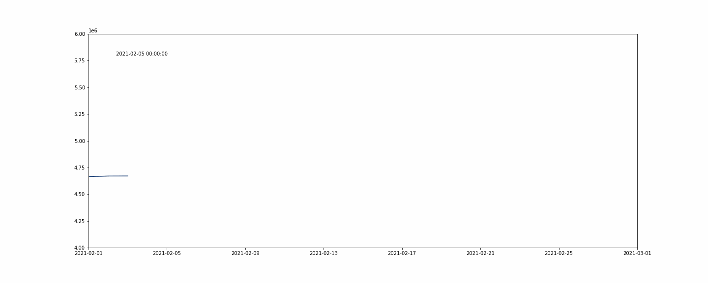
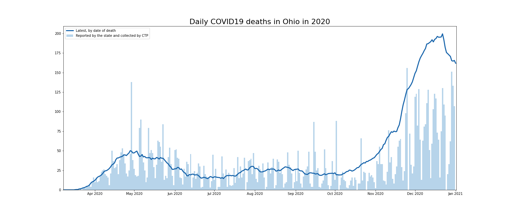

Project Avocado 🥑
May, 2021
The data is fetched daily and stored in a relational database. Each metric value is identified by: - State abbreviations - The timestamp this value describes - The dating scheme the state is using for this metric, e.g., “Specimen Collection” or “Test Result” - The time this time snapshot of the timeseries was fetched (as fetch_timestamp) - Example: OH, 2021-02-09, Test Result, 2021-03-29 08:30:00, 9427862 (`totalTestsViral`)
Number of daily tests and test results is a metric that continuously udpates because of different lab reporting schedules, reporting delays, and processing (getting the test results) times.
Use the data to show the continuous updates to daily testing
import pandas as pd
df = pd.read_sql(
'''
SELECT fetch_timestamp, timestamp, "positiveTestsViral" + "negativeTestsViral" AS tests
FROM avocado
WHERE state = 'WA'
AND date_used = 'Specimen Collection'
AND fetch_timestamp < '2021-04-01'
AND timestamp >= '2021-02-01'
AND timestamp < '2021-03-01';
''',
engine)
df = df.pivot_table(index='timestamp', columns='fetch_timestamp', values='tests')Use the results to plot the updates over time 
Accurate death reporting takes time. We can compare the preliminary data reported by states and collected by CTP to the revised data states publish
import pandas as pd
latest_df = pd.read_sql(
'''
SELECT timestamp, death
FROM avocado
WHERE state = 'OH'
AND date_used = 'Death';
AND fetch_timestamp = (SELECT MAX(fetch_timestamp)
FROM avocado
WHERE state = 'OH' and date_used = 'Death')
AND timestamp < '2021-03-08'
''',
engine)
ctp_df = pd.read_csv('https://api.covidtracking.com/v1/states/oh/daily.csv', parse_dates=['date'], index_col='date', usecols=['date', 'death'])
df = pd.concat([ctp_df, latest_df], axis=1)
df.columns = ['Reported', 'Latest']Use the results to plot the updates over time 